순례자의 한끼한밤
순례자의 한끼한밤순례길 끝에는, 산티아고 말고
진짜 '끝'이 하나 더 있습니다.
순례길의 끝은?
보통은 산티아고 대성당에 도착하면 순례길이 끝났다고 합니다. 그런데 많은 순례자들이 거기서 한 번 더 서쪽으로 갑니다. 바다가 나올 때까지요. 그곳이 피스테라(Fisterra)입니다. 이름부터가 라틴어 '피니스 테라이(Finis Terrae)', 땅끝이라는 뜻이에요.
이름에 담긴 뜻
로마 사람들이 믿은 세상의 끝
로마 사람들은 이곳을 사람이 사는 땅의 맨 서쪽 끝이라고 믿었다고 합니다. 그 너머로는 끝없는 바다뿐이었으니까요.
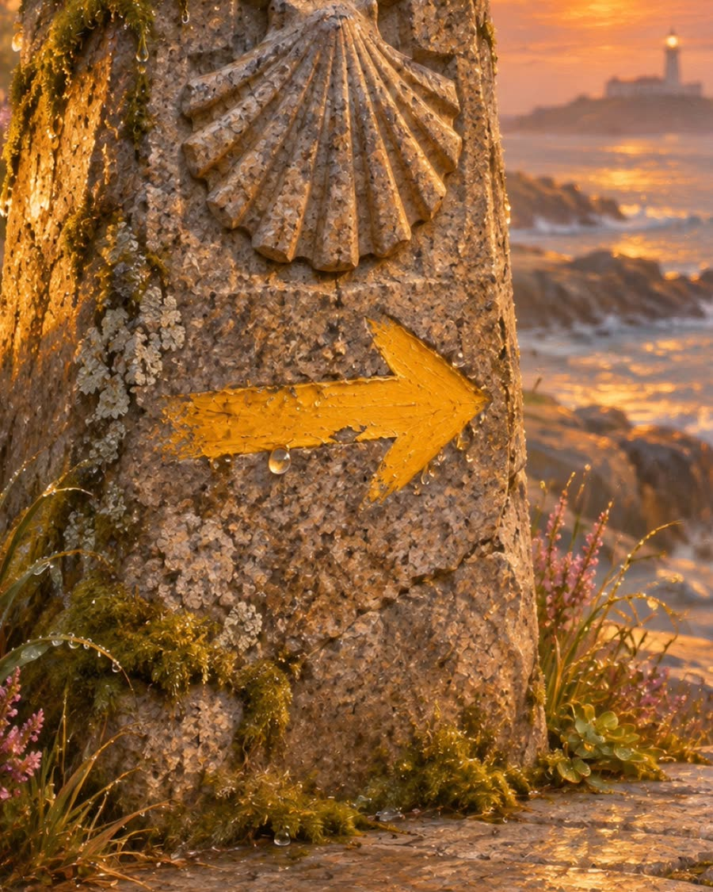
산티아고에서 피스테라까지 더 가는 거리.
바닷가 절벽 끝에 0km 비석이 서 있습니다.
저는 산티아고에서 버스를 타고 갔습니다. 0km 비석 앞에 서니 그냥 신기했어요. 내가 여기 있다니. 그리고 드디어 끝났구나, 싶었습니다.
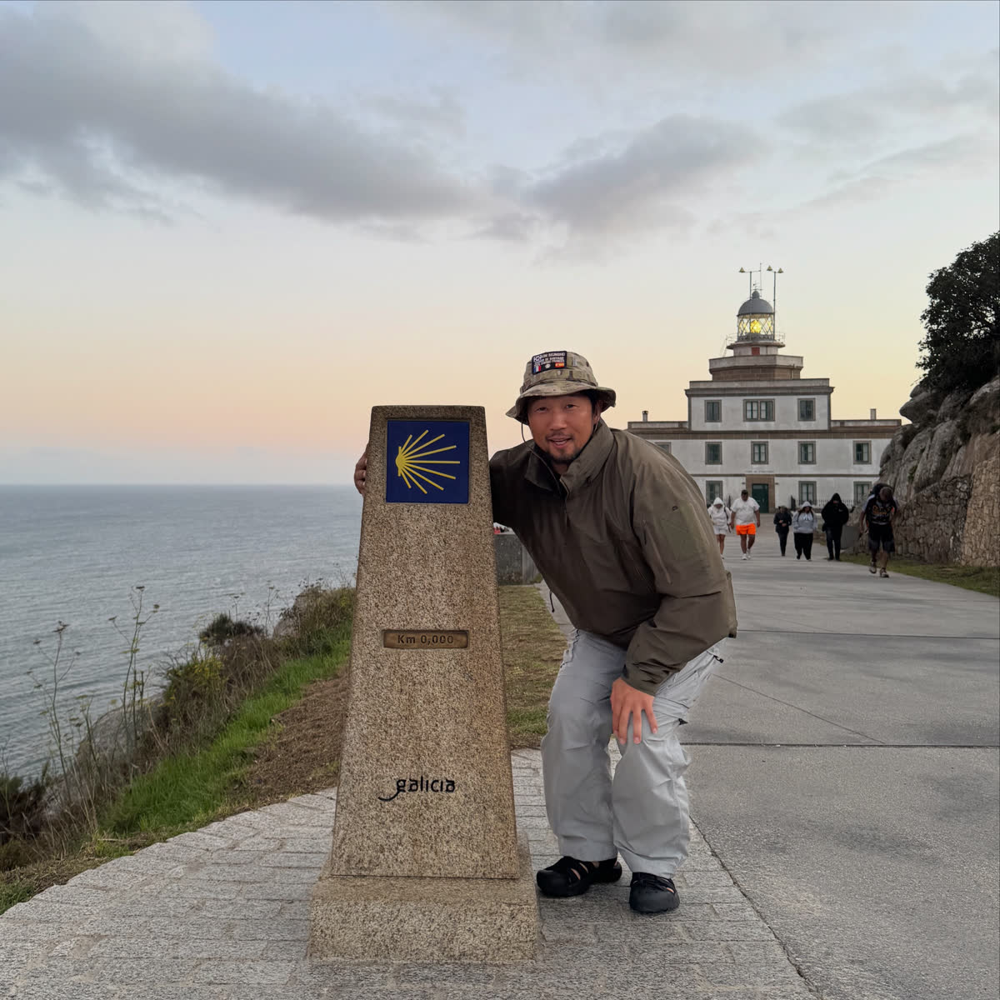
신발을 태우던 곳
순례자들은 여기서 걷는 내내 신은 신발이나 옷을 태우곤 했습니다. 아주 옛날부터 이어진 풍습이라는 말도 있지만, 1980년대쯤 생긴 거라는 자료가 더 설득력 있어요. 지금은 불을 피우지 못하게 합니다.
땅끝에서 본 공연
해 지는 걸 보러 등대 쪽으로 걸어가는데, 풀밭에서 하프를 켜며 노래하는 사람들이 있었어요. 땅끝에서 공연이라니, 그것도 신기했죠.
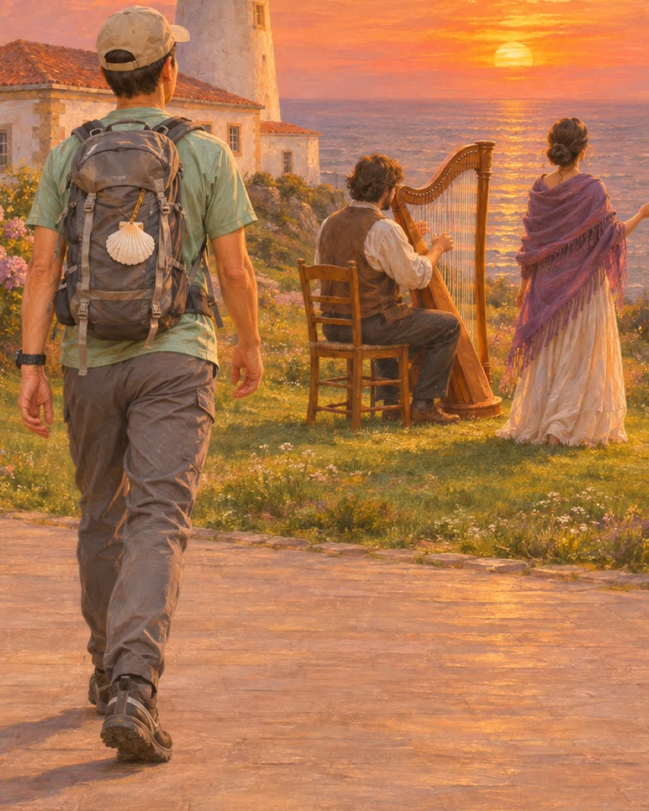
저는 혼자 바위에 꾸역꾸역 올라가서 외국인들 옆에 앉았습니다. 풍경 너무 좋다고 인사 몇 마디 나누면서요. 그런데 해무 때문에 해가 흐릿했어요. 비도 살짝 왔고요. 그래도 그 자리에 앉아 있는 것만으로 좋았습니다.
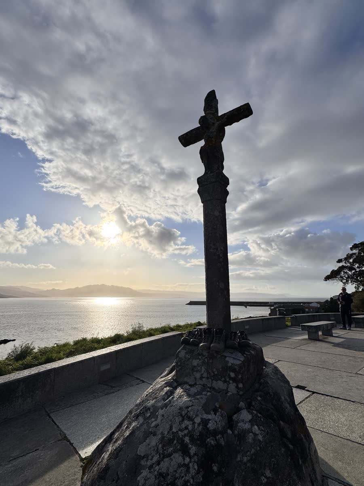
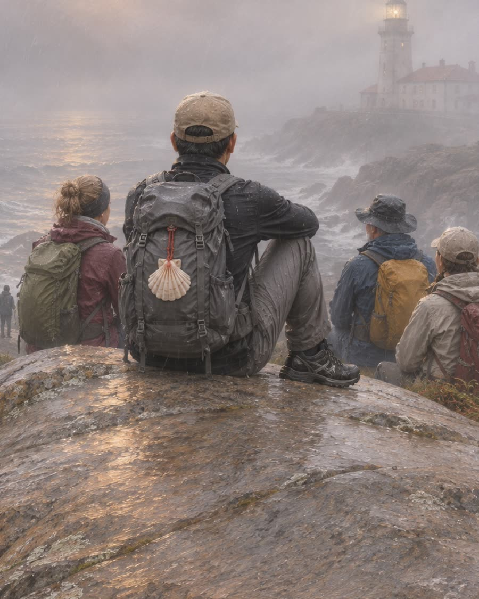
해산물, 그리고 바다
내려와서는 문어 요리 뽈뽀, 오징어 튀김, 조개까지 엄청 먹었습니다. 바닷가 마을답게 해산물이 정말 맛있었어요.
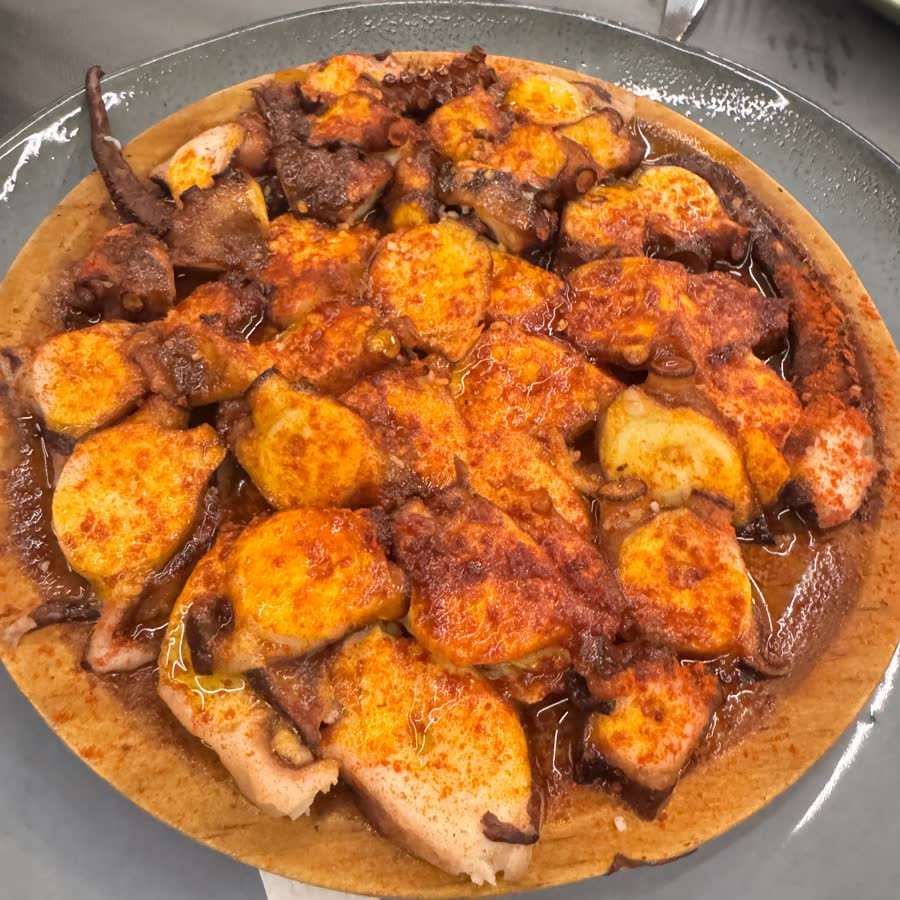
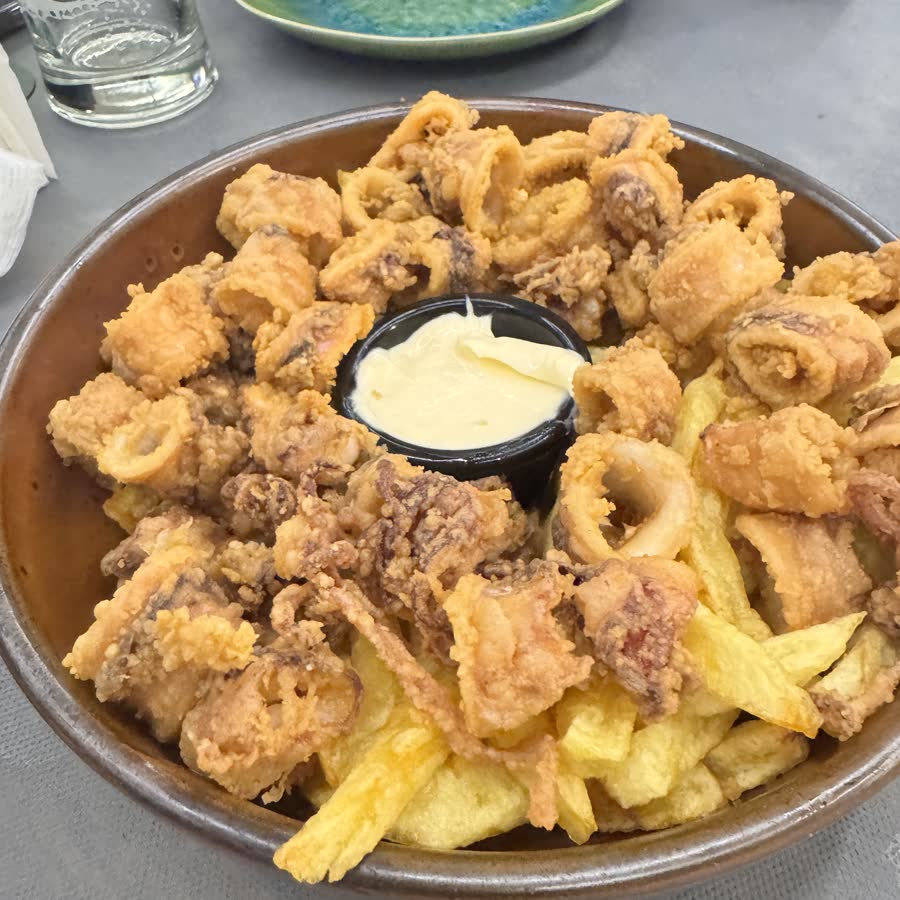
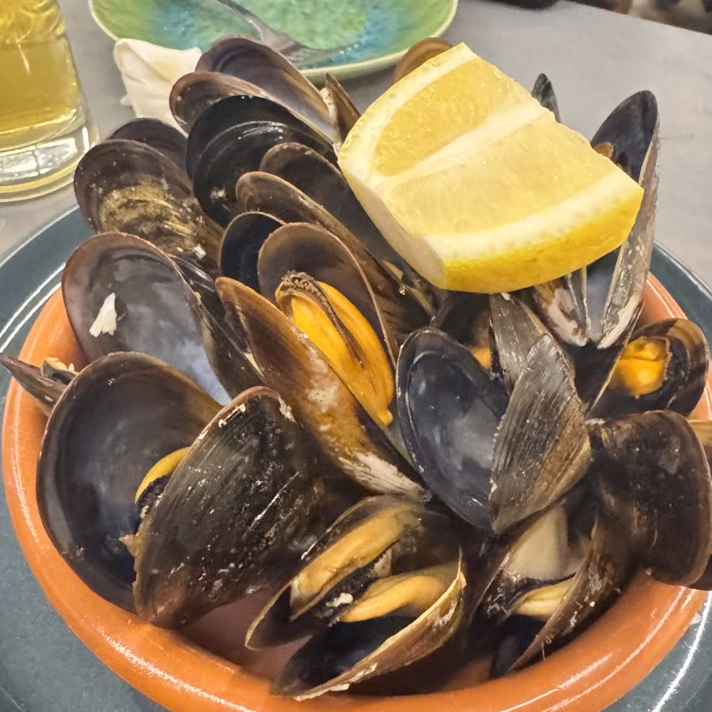
숙소 창밖으로는 피스테라 항구가 내려다보였어요. 해가 산 너머로 넘어가는 걸 창문으로 한 번 더 봤습니다.
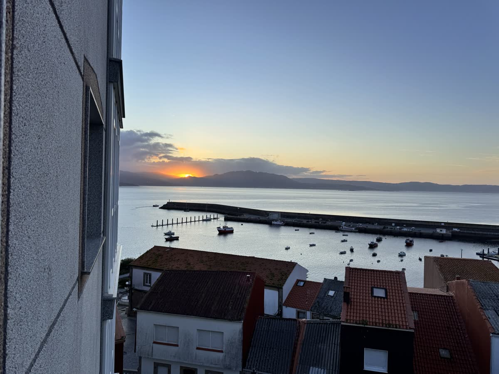
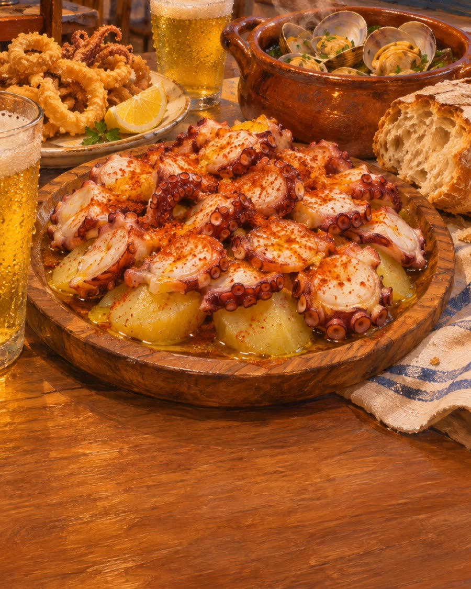
다음 날 아침엔 추운데도 다 같이 바다에 들어가 놀았습니다. 그리고 32일 동안 신은 운동화를, 그 바닷가 바위에 두고 왔어요.
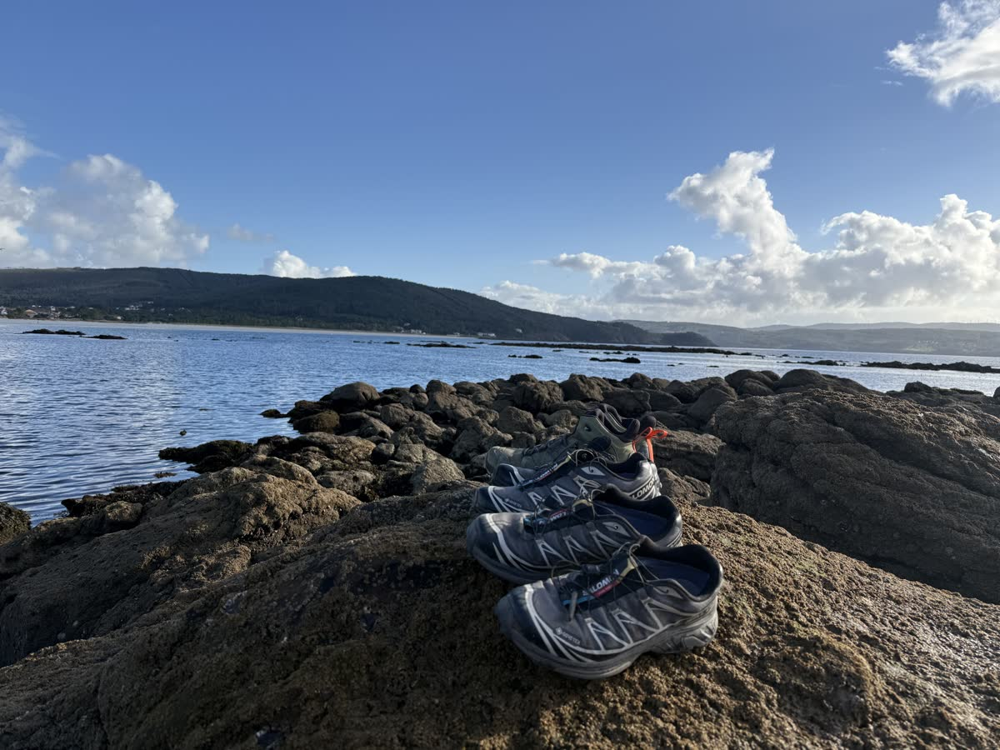
피스테라에서 보낸 하루
- 도착
바닷가 절벽 끝 0km 비석 앞에 서다
- 해 질 녘
등대 가는 길 하프 공연, 바위 위에서 본 해무 낀 노을
- 저녁
뽈뽀, 오징어 튀김, 조개
- 다음 날
바다에서 놀고, 운동화를 바위에 두고 오다
그래서 저한테 순례길의 진짜 끝은,
산티아고가 아니라 피스테라예요.
🇬🇧 For pilgrims passing by
For many pilgrims the Camino does not end at Santiago. About 90 km further west lies Fisterra, from the Latin "Finis Terrae", the end of the land. The Romans believed it was the western edge of the inhabited world, and a 0 km marker stands on the cliffs by the lighthouse. Pilgrims used to burn their boots and clothes here, a custom most sources date to the 1980s; fires are no longer allowed. I took the bus from Santiago in 2025, watched a misty sunset from the rocks, ate octopus, fried squid and clams, swam in the cold sea the next morning, and left my shoes on the rocks by the shore.
📚 참고한 자료
- WorldAtlas, Galicia Tips: 피스테라 이름과 로마 시대 '땅끝' 이야기
- Hillwalk Tours 등: 산티아고~피스테라 약 90km (안내서마다 86~91km)
- Vive Camino: 신발 태우기 풍습과 지금의 불 금지 (시작 시기는 '1980년대'라는 자료를 따랐습니다)
- 0km 비석, 공연, 노을, 해산물, 운동화: 2025년 제 순례길 경험 (사진도 그때 직접 찍은 것)
🍽️ 한끼한밤 이야기
- 1화 · 떡볶이가 빨개진 건, 포르투갈 때문?
- 2화 · 400살 포르투갈 빵, 카스텔라
- 3화 · 에그타르트, 189년째 비밀
- 4화 · 순례자가 천 년 동안 가리비를 단 이유
- 5화 · '빵'은 포르투갈 말
- 6화 · 노란 화살표는 신부님이 그렸다
- 7화 · '덴푸라'는 일본말이 아니다
- 8화 · 순례길의 진짜 끝, 피스테라 0km (지금 읽는 글)
🕯️ 오늘 밤 이야기는 여기까지.
처음부터 다시 걷고 싶다면, 피레네를 넘은 첫날부터 읽어 보세요.